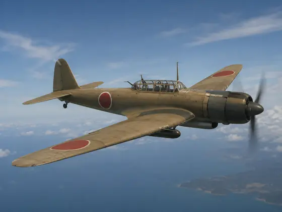

G4M operations · 1941–1945
The G4M Betty was central to Japanese long-range naval air power. It attacked Force Z off Malaya, fought from Rabaul through the Solomons, carried torpedoes against Allied shipping, flew the aircraft carrying Admiral Yamamoto on his final flight, and later carried the Ohka special attack weapon. A good G4M model starts with the route: early G4M1 torpedo bomber, Rabaul-based dark green aircraft, Yamamoto mission subject, late G4M2, or Ohka carrier.

Role & strengths
- Imperial Japanese Navy land-based bomber, torpedo attacker and long-range reconnaissance/strike aircraft
- Malaya/Force Z, Rabaul, Solomons, Yamamoto mission, late-war and Ohka carrier routes
- Long fuselage, greenhouse nose, lateral blisters, tail gun, twin Kasei radials and torpedo/bomb load
- IJN dark green over grey, Hinomaru, Kokutai codes and late-war field camouflage
- Heavy exhaust, sun fading, chipped paint, oil, dust, rough repairs and Pacific field grime
Key theatres
- Malaya and Force Z torpedo attack route
- Rabaul and Solomon Islands operations
- Yamamoto interception route
- Late-war G4M2 and Ohka carrier routes
Specification G4M1
Survivor/reference today
G4M references rely on period photos, wrecks and museum fragments. Use wrecks for structure and details, but verify wartime colours and markings separately.
View referencesTimeline highlights
Build this G4M as…
Pick the role and base first. Force Z torpedo aircraft, Rabaul bomber, Yamamoto mission aircraft, late G4M2 and Ohka carrier all need different markings, fittings and weathering.
Aircraft identity
G4M1, G4M2 and Ohka carrier aircraft differ in windows, turrets, tail position and equipment. Do not mix details across marks.
Pacific G4Ms could be heavily worn, but chipping must follow crew access, airflow, heat and field-repair logic.
Paint scheme cards
Core G4M1/G4M2 route with Hinomaru, Kokutai markings and Pacific fading.
Force Z/Rabaul torpedo builds need underside, rack and torpedo finish checks.
Land-based route with heat, dust, exhaust, rough repairs and paint breakdown.
Late G4M2 routes need variant checks, heavy wear and subject-specific fittings.
Campaign cards
Early torpedo route with Type 91 loadout and maritime strike story.
Long-range bomber/torpedo route with field wear, exhaust and sun-faded green.
Specific aircraft route with 705 Kokutai markings and historically sensitive detail checks.
Late-war specialist route with altered loadout and heavy operational wear.
Build difficulty and related guides
High. Long fuselage, clear nose, blisters, tail gun and twin-engine alignment need care.
High. G4M1/G4M2/turret and Ohka-carrier details must match the subject.
High. Japanese field wear and exhaust can look excellent, but over-chipping ruins scale effect.
Mitsubishi G4M Betty Kokutai and bomber units
Sortable G4M cards covering Force Z, Rabaul, Solomons, Yamamoto mission, late G4M2, Ohka carrier and survivor/reference routes.
G4M Betty operating map
Airfield info
Click a marker to show linked G4M unit cards and modelling notes.
Campaign timeline
Survivors
Books and reference sources
G4M Betty build guide
G4M Betty videos, photos and archive material
Media replaces the old separate walkaround tab: cockpit, exhaust, undercarriage, markings, survivor references, archive imagery and video cards are grouped here.